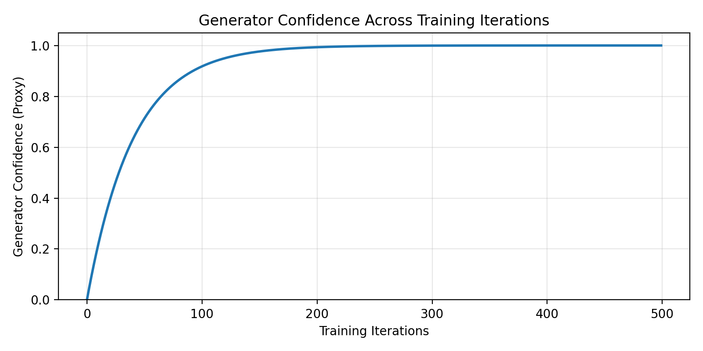

Model Architecture
The MusicGAN-Transformer framework integrates a Transformer-based generator with adversarial training to produce structured, multi-track symbolic music.
Multitrack Interdependency
- Jamming model: independent generators per track
- Composer model: single generator for all tracks
- Hybrid model: shared and private generators

Overview of the Transformer-GAN pipeline, showing dataset preprocessing, tokenisation, latent-conditioned Transformer generation, and multi-track MIDI output evaluation.
Temporal Structure Modeling
Temporal dependencies are modeled hierarchically through a Transformer architecture that captures both local rhythmic patterns and long-range musical structure across tracks.

Generator confidence proxy across training iterations, indicating stable convergence and reduced uncertainty during adversarial training.